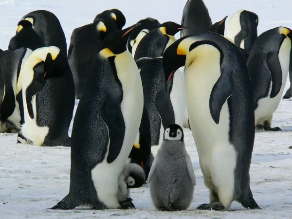
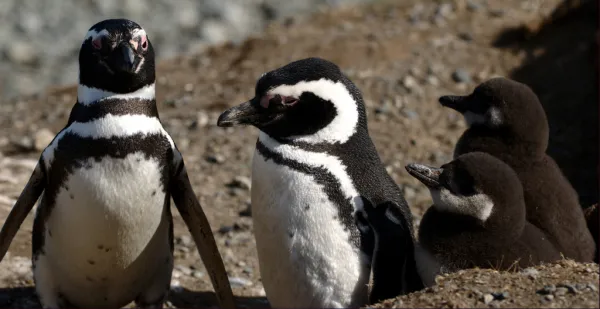

TIPOS DE PINGÜINOS
No existe una única especie de pingüinos, existen muchas más especies. Hasta 18 especies de pingüinos y, a pesar de su variedad, son algunas de las aves más familiares y más fácilmente reconocibles del mundo.
En la siguiente tabla mostraré todos los tipos que hay (Puedes acercar el cursor a las imagenes para verlas a mayor tamaño).
| NOMBRE |
DESCRIPCIÓN |
FOTO |
| PINGÜINO EMPERADOR |
El pingüino emperador (Aptenodytes forsteri) es el más grande de los pingüinos, puede llegar a medir 120 cm de alto y pesar entre 20-45 kg. |
 |
| PINGÜINO REY |
El pinguino rey (Aptenodytes patagonicus) es el segundo pingüino más grande del planeta, puede medir 100 cm y llegar a pesar 16 kg. Guarda muchas semejanzas con el pingüino emperador pero con un tamaño menor. |
|
| PINGÜINO DE ADELIA |
El pingüino de adelia o de ojo blanco (Pygoscelis adeliae) es un pingüino de tamaño medio que alcanza los 60-70 cm y puede pesar 4 kg. Se caracteriza porque su ojo posee un anillo blanco alrededor. La base del pico está oculta por unas plumas negras. |
|
| PINGÜINO DE BARBIJO |
El pingüino de barbijo o de cara marcada (Pygoscelis antarcticus) puede alcanzar los 75 cm. Habita y anida en islas cercanas a Antártida |
 |
| PINGÜINO PAPÚA |
El pingüino papúa (Pygoscelis papua), también conocido como pingüino de gentú o juanito anida en la isla de Peterman, islas Malvinas y cerca de la Antártica. |
|
| PINGÜINO DE LAS GALÁPAGOS |
El pingüino de las Galápagos (Spheniscus mendiculus) es una especie endémica de las islas Galápagos. Es la única especie que vive en el hemisferio norte. |
|
| PINGÜINO AFRICANO |
El pingüino africano o de anteojos (Spheniscus demersus) es la única especie que vive en el continente africano, en las costas del extremo sur. Es un pingüino de pequeño tamaño al que le gustan las aguas cálidas. |
|
| PINGÜINO DE MAGALLANES |
El pingüino de Magallanes o patagónico (Spheniscus magallanicus) está presente en Chile, Argentina y las islas Malvinas. |
 |
| PINGÜINO DE PENACHO AMARILLO |
El pingüino de penacho amarillo o saltarocas (Eudyptes chrysocome) es el más pequeño de los pingüinos con cresta. Habitan en islas cercanas a la Antártida. |
|
| PINGÜINO MACARONI |
El pingüino macaroni o de frente amarilla (Eudyptes chrysolophus) cuenta con un gran número de ejemplares que viven en una amplia región entre América del Sur y África, aunque en la actualidad se considera en estado vulnerable debido a la contaminación. |
|
| PINGÜINO REAL |
El pingüino real o de cara blanca (Eudyptes schlegeli) habita principalmente en la isla de Macquarie, creca de la Antártida. |
|
| PINGÜINO DE FIORDLAND |
El pingüino de Fiordland o de pico grueso (Eudyptes pachyrhynchus) es originario de Nueva Zelanda. Su nombre se debe a que crían en la costa de Fiordland e islas cercanas. En lengua maorí lo conocen como tawaki. |
|
| PINGÜINO DE CRESTA ERECTA |
El pingüino de Sclater, de las antípodas o crestudo (Eudyptes sclateri) habita en islas del litoral de Nueva Zelanda. Se encuentra en peligro de extinción. |
|
| PINGÜINO DE SNARES |
El pingüino de Snares (Eudyptes robustus) cría en la isla de Snares, Nueva Zelanda. Este pingüino mide 50-70 cm y pesa hasta 4 kg. Posee dos penachos amarillos y ojos rojos. Es muy parecido al pingüino de Fiordland, se diferencia en que posee una región de piel de color rosado en la base de su pico. |
|
| PINGÜINO DE OJOS AMARILLOS |
El pingüino de ojos amarillos (Megadyptes antipodes) es originario del sureste de Nueva Zelanda. Es un pingüino de tamaño medio, miden entre 60-70 cm y pesan hasta 8 kg. |
|
| PEQUEÑO PINGÜINO AZUL |
El pequeño pingüino azul o pingüino enano (Eudyptula minor) es el pingüino más pequeño del mundo. Habita en costas de Nueva Zelanda, Australia, islas Chathan y Tasmania. Miden 40 cm y pesan 1 kilogramo. |
|
| PINGÜINO ENANO DE ALAS BLANCAS |
El pingüino enano de alas blancas (Eudyptula albosignata) es junto con el pingüino azul la especie de pingüinos más pequeña del mundo. Miden 30 cm y pueden pesar hasta 1,5 kg. Es por su tamaño y semejanzas con el pingüino azul que muchos consideran a este pingüino una subespecie de la anterior. |
|